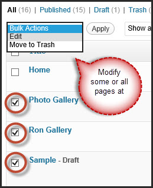
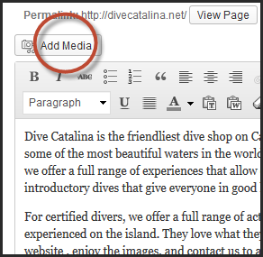
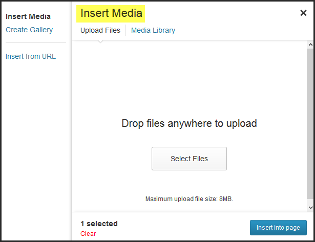
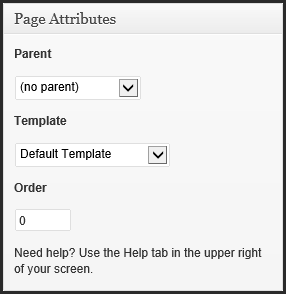
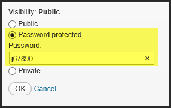
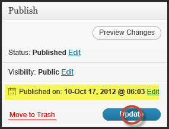

Copyright
The contents of this User Manual are subject to the Dive Catalina Website. This documentation is created by Spring 2012 CSULB Senior Project Team GREP. Users All Rights Reserved. All trademarks within this guide belong to Ron Moore.
Logging In
User can use administration interface to modify content and set up stucture of the website.
- In order to access the administration interface, user must log in first. User can access the log in screen, as shown in Figure 1, by using the address www.divecatalina.net/wp-admin. Then, user will be asked to enter the username and password.
- User must log off when done using the admin panel. It will stay logged in until user logs out.

- Figure 1. Log in screen
The Dashboard
- Once the user is logged in, Dashboard page appears as shown in Figure 2. This is the main administration homepage. At every top of the pages, name of the site is located in the header area which is also hyperlinked to site's homepage. On upper right corner, user can locate the name of the person who is currently logged in. User can find edit profile and log out link by putting a cursor on the name of the person [Figure 3].
- Figure 2. Main Admin Page

- Figure 3. Hovering over the name displays options to edit profile or log out.
Menu
- Along the left side of the Dashboard, user can locate main admin navigation menu as shown in Figure 4. Menu contains main options user can use to edit and confgiure the website.
 Figure 4. Media Fly Out Figure 4. Media Fly Out |
Menu has been adjusted to show only the options that are applicable to the user. Menu includes six options: Media, Pages, Appearance, Plugins, Users, and Settings.
When the user hovers over one of the main options, it displays 'fly out' menu for that specific main option. For instance, Figure 5 shows that hovering on Media displays two choices on its 'fly out' menu: Library and Add New. If the user clicks on the main menu, it will use the first option under fly out menu and direct to the page. |
- Options
Dashboard: Directs user back to Dashboard homepage. Media: Stores all images,documents, and files. User can browse through the Media library, and also edit,delete and update the files. Pages: Allows user to edit, delete, and maintain all web pages. User may also create new pages and add to the directory. Appear: Appearance: Allows user to regulate how site looks. User can manage the plugins, widgets, and menus. Plugins: Allows user to deactivate or activate plugins. Users: Lists all the active users on the site. Depending on the role, user is allowed to add or delete another user. Setting:
Editing a Page
When the cursor hovers on Pages link in the main menu on the left, it displays a 'fly out' menu with two options: All Pages and Add New. To edit a page or view a list of existing pages, user can either click on the Pages link or click on the Add New link from its 'fly out' menu. Once the user clicks on the link, user will be taken to Pages screen where it lists all existing pages as shown in Figure 5.
Pages:List of Existing Pages
- Figure 5. Pages page lists all existing pages
- Header
- The first row in the header displays All, Published, Draft, and Trash links with (number) beside each link. The links indicate the status of the pages and the number shows how many pages are under Draft, Trash, All, or Published. When user clicks on the All link, it will display a list of all existing pages including all Drafts and Published . Publish link will only display a list of pages that are already published to the website. Draft link will display the pages that are saved as drafts and not published to website. By clicking on Trash link, user will be able to retrieve pages that have been deleted. User can search for a page by typing the name of the page in the Search Box located on the far right as shown in Figure 6.
- Figure 6. First header of Pages screen
- The second row in the header displays Bulk Actions menu and Show by dates Filter menu. User can use Bulk Actions menu to make the same changes on some or all pages by checking off the checkbox located next to the name of the page as shown in Figure 7.
- 
- Figure 7. Bulk Actions Menu
- Show by dates Filter menu allows user to display only the pages that were published or last modified during a particular month and year. For instance, if user filters the list of pages by choosing October 2012 from the menu as shown in Figure 8, user will see a list of all the pages that were last modified or published in October 2012. User must note that if a page was published in October 2012 but it was last modified in November 2012, that page should be listed under November 2012 and not October 2012.

- Figure 8. Show by Dates Menu filters pages by the dates published or last modified
- Select a Page to Edit
- User can edit a page by hovering the mouse pointer over the name of the page as shown in Figure 9. A short menu will appear on the bottom of that page name: Edit, Quick Edit, Trash, and View. User can click on Edit link or name of the page to direct to Edit a Page screen to add or delete page content and media. Quick Edit option allows user to make quick changes such as updating the page name. User can delete the page by clicking Trash link. Lastly, View option allows user to view the page as how it is displayed in the website. For general editing, user can click on the name of the page or click on the Edit link.
- Figure 9. Short menu is displayed when the user hovers over the name of the page
Edit Page
- Once user clicks on the the name of the page, user will be directed to Edit Page screen. User can update contents and media on a particular page here. Figure 10 shows Edit Page screen for the Dive Catalina's Home page. Edit Page has many features available. In this section, user will be introduced to Title Bar, Text Editor, Publish box, Discussion box, Attributes box, Comments Box, and Revisions Box.
- Figure 10. Edit Page Screen
Enter Title
- The name or title of the page is located on top of page. Permalink is displayed below the name of the page. Permalink is a permanent URL's to a particular page as shown in Figure 6. User can change the permalink by clicking on it or click on View Page button to display the current page.
- To change the name of the page, user should delete the original name and type in new name in the "Enter Title Here" entry field box as highlighted in Figure 11. Once completed, user can see the new permalink by moving the cursor to Text Editor box.

- Figure 11. Title of the page
Edit Content
- User can edit or add page content by using the Text Editor as shown in Figure 10. In this section, user will learn about the functions of all the buttons on the Tool Bar which make text editing much easier, and about switching Text Editor to Visual or HTML mode.
- Visual vs HTML Mode
- User can switch between Visual and HTML modes by clicking on the tabs on the right corner of the Text Editor's header bar as shown below. Visual mode is displayed as default when user is brought to Add New Page screen. On Visulal mode, text is displayed in a WYSIWYG format just like the word processor and its Tool Bar is also displayed like the one in word processor. User will be working on the Visual mode most of the time, but user has the option to switch to HTML mode to code in HTML.

- Figure 12. Text Editor on Visual Mode

- Figure 13. Text Editor on HTML Mode
- Tool Bar
- By default, Visual mode has only top row of the Tool Bar displayed. User can expand the Tool Bar by clicking on the Kitchen Sink button located at the end of the first bar. The following two screen captures show the function of each button on the Tool Bar on Visual Mode.

- Figure 14. By default, only single row of tool bar is displayed.

- Figure 15. User clicks on Kitchen Sink button and full Tool Bar is displayed
- Sizing the Text Editor Box
- User can resize the Visual Text Editor to get more space to work by clicking on three lines located on the lower right-hand corner and dragging the editor box downward as shown in Figure 12. User can also make the size smaller by dragging it upward. This functionality is not available in HTML mode.
- Figure 16. Resize the text area by dragging the three lines located on lower right-hand corner of the box
Add Media
- User can add or edit media by clicking on the Upload/Insert icon above the Tool Bar as shown in Figure 17. Once user clicks on the icon, Add Media box will appear. Uploading media through Edit Page or Add Page is useful when user wishes to upload many media items at once. If user uploads them using Media Library or Add New Media, user will have to manually attach each media item to a particular page or pages.
- 
- Figure 17. Upload/Insert Media Icon
- User can add media From Computer by dragging the media files to the box that says "Drop files here" or select files by clicking on the Select Files button as shown in Figure 18. User can add photos, audio, video, and any other media files just by dragging them into the box.
- 
- Figure 18. Add Media From Computer
- User can also add media From URL by providing the media's URL link. User must fill out the entry fields marked with * symbol. Other entry fields are optional for the user to fill them in.
- Figure 19. Add Media From URL
- User can add media through Media Library as shown in Figure 20. Media Library lists all the media that are already uploaded. User can select the media by clicking on the Show link and add it to the page. If user would like to find a particular media, user can search for its name in the search box.
- Figure 20. Add Media From Media LibraryL
Attributes
- Attributes box provides additional options. It includes Parent menu, Template setting, and Order input box as shown in Figure 21. To see the changes, user must save the changes by clicking on the Update button. Clicking on the Update button will not publish the changes to actual site.
- 
- Figure 21. Attributes Box
- Parent Menu
- The first option in the Attributes box is the Parent menu. Parent menu allows user to choose a parent page for the page. By default, (no parent) is selected. If user wants to make the page a sub-page of an existing page, user needs to select another existing page, parent page, by clicking on the dropdown arrow. Once user clicks on the drop down arrow, all the existing pages will be displayed as shown in Figure 22. As shown in Figure 22, some of the page title are indented because they are sub-pages of a particular parent page. For instance, Staff is a sub-page of the About Us page, and About Us page would be the parent page.
- Figure 22. Parent Menu
- Template Setting
- Template setting allows user to change the page layout. By default, Default template is set as default. Template setting has five different templates: Default, About Us, Photo Gallery, Reservations, and Services. Each template differs from each other and displays specific information. Templates are named under a particular page such as About Us Template is created particulary for About Us page. User will be using Default Template most of the time. But, user can use other templates if he or she would like to make the page have the same layout as About Us page, Photo Gallery page, Reservation page, or Services Page. Figure 24 shows an example of Photo Gallery page using the Photo Gallery Template.

- Figure 23. Template Setting
-


- Figure 24. Photo Gallery Template
- Order Input Box
- Ordered Input Box is located under Template setting. Pages are ordered alphabetically according to their titles by default. User can override this default by using the Order box. By entering numbers in Order boxes for each page, pages are ordered according to the numbers.
Publish Box
- Once user is done editing the page, user can either save the page as a Draft or Publish it to the website. It is recommended to click on Preview link to preview the page before making it page active. Publish box has options for publishing the page to the site: Status menu, Visibility menu, and Publish date setting. In this section, user will learn how to use these options. If user wishes to delete the current page, user can click on the Move to Trash link and the page will be deleted. For any available options, user must click on the Update button to save the changes.
- Figure 25. Publish box is located on the right-hand side of the page
- Status Menu
- Status Menu allows user to move page from one state to another. It is a contextual menu that shows only possible options at a particular time depending on the current state of the new page. By default, the state of the new page is set as Draft. User can click the Edit link next to the current state to change the status of the page. Once user has picked the state, user must click Ok button and Update button to save the changes.

- Figure 26. Status menu
- State menu has four different states: Draft, Pending Review, Scheduled, and Published. Not all choices are shown everytime. Figure 18 shows only Pending Review and Draft states. The following lists the states and their functions.
-
Draft Indicates that the page is in early stages. Page is unpublished. Pending Review Used when there are multiple users. User can change to this state if the page is ready for review. Pages with Pending Review state are listed separately, so users will know if a page is ready to be reviewed. Scheduled Indicates that the page will be published in the future or on certain date. To change the status of a page with Scheduled state, user must change the publication date and then update the page first. Published Indicates that page is published and available on the website. However it is only visible to permitted viewers depending the visibility setting. - Visibility Setting
- Visibility Setting allows user to decide who can see the page when it is published onto website as shown on Figure 27. The current visilibity state is Public by default. To change the visibility, user must choose an option by checking the radio button located next to the state name. Once user has chosen the state, user must press Ok button to confirm or click Cancel link to cancel changing the visibility setting. In order to update the changes, user must ensure to click on the Update button which will be displayed after user cliks on Ok button.
- Figure 27. Visibility Setting
- Here is a list of available Visibility options:
-
Public This is the default setting. Anyone can see the page. Password Protected Prompts viewers for password to view the page as shown on Figure 28. User must chose a password that will be used by the viewers. Private Only editors and administrator have the access to view the content by logging on to Wordpress. Anyone else cannot view the page even if he or she has an access to Wordpress. - 
- Figure 28. Enter Password
- Publish Setting
- The default setting is set to Immediately. When user clicks on the Edit link next to the default Public setting, it will display Figure 29. It allows user to choose a date and time to publish the page automatically. User needs to click Ok button to confirm the changes and click Schedule or Update button to save the changes as shown in Figure 30.
-
Figure 26. Publish SettingFigure 30. Schedule Button
Discussion and Comments Box
- By default, all checkboxes in Discussion box are checked. User can keep them checked if user would like to allow comments on the page. User should keep them unchecked if user wants to create the page consistent with rest of the pages on divecatalina.net. Comments box allow user to add comments to the current page.

- Figure 31. Discussion and Comments box
Revisions Box
- Revisions box is displayed at the bottom of the Add Page. Once the user clicks on the Revisions header, it will display a list of all the revisions made by the users ordered by date. User can click on a link to see the original page before the changes were made. This feature comes in handy when user would like to view or restore the older versions of the page.
- Figure 32. List of all the revisions made since the day page was first published
- Figure 33. Revision page is displayed when user clicks on a link
Adding a Page
When the cursor hovers on the Pages link in the main menu on the left, it displays a 'fly out' menu with two options: All Pages and Add New. To create a new page, user must click on the Add New link from its 'fly out' menu. Once the user clicks on the link, user will see the Add New Page screen as shown in Figure 34. Add New Page is exactly the same as the Edit Page except some features such as Comments box and Revisions box are not available. User can refer back to Editing a Page section in this documentation for tutorial on the features.
- Figure 34. Add New Page
Editing Media
User can enrich the website by adding media such as photos, images, audio, and video. Anything that are multimedia can be uploaded onto Media Library. However Media Library is not limited to only multimedia, user can also upload PDF files and ZIP files without converting them to a specifc format.
User can access this feature through the Dashboard. When the user hovers the cursor on Media link in the Dashboard menu on th left-side, a 'fly-out' menu will display with two options: Library and Add new. Library allows user to manage the media items. Add new allows user to add new media such as photo, audio, video, pdf, and etc.
Media Library
- User can add and manage media items in the Media Library. Library looks a lot like the Pages screen where it displays a list of existing pages. However Media Library has additional features such as Images link, Unattached link and Parent category.
- Figure 35. Library lists all existing media items
- Header
- The header of Media Library looks a lot like the one from Pages screen. User can add new media directly from the Media Library by clicking on the Add New link located next to the Media Library title. Underneath the title of the page, Media Library, user can find a short menu consists of All, Images, Unattached, and etc. These options indicate the status of the media items and how many there are. All represents all the media items in the library. Images link indicates only the image media items. Unattached link indicates media items that are existing in the library but not attached nor used in the actual website.
- User can search for a particular media item by searching the name in the search box located far right. Right below the short menu, user can find Bulk Actions menu that allows user to make the same changes to selected media items at once. User can also filter the media items by using the Show by Dates Filter menu so that user can view only the items from a specifc month and year. For more information on Bulk Actions and Show by Dates Filter menu, user can refer back to Pages header section.
- Figure 35. Library header
- Media List
- User can find list of media items underneath the header of the Media Library. Each media item is identified by its File name Author, Date, and Parent. File link allows user to order the list alphabetically by media item's name. Author link allows user to order by the media's author who uploaded the media. User can also order the list by the Date which makes the list order from the latest to oldest. The Parent category shows the location(s) of where a particular media is attached or used. For instance, figure 36 shows garibaldiAndGorgonian-MD.jpg file uploaded and edited by Admin on December 6, 2012 is attached only in Ron Gallery.
- Figure 35. Library lists all existing media items
- Attach Media to a Page
- Uploaded media items to the Media Library will not automatically visible or attached to the web pages. Once user uploads a media item such as an image through Media Library, user must attach it to a page(s) to see it on the website. For instance, Figure 36 shows that the media is attached to Ron Gallery page. User can click on Ron Gallery link to direct to Edit Page screen for Ron Gallery page. Re-Attach and attach links allow user to select more pages to attach the media to. Once user clicks on the link, Find Posts or Pages box will pop up as shown in Figure 37.
- If user wishes to add many media items to a particular page, user may want to upload them directly from the Edit Page screen for that specific page. For instance, it is recommended to upload photos directly to Ron Gallery page through Edit Page screen for Ron Gallery. More information is provided in the Add Media section in the documentation.
- Figure 36. Choose Parent Page
- Figure 37. Find Posts or Pages to Attach
- Select Media Item to Edit
- User can edit a media by hovering the mouse pointer over the name of the media as shown in Figure 36. A short menu will appear on the bottom of that page name: Edit, Delete Permanently, and View. User can click on the Edit link or the name of media to direct to to Edit Media page as shown in Figure 39. User can delete the media item by clicking on Delete Permanently. View option allows user to view the media item.
- Figure 38. Short menu
Edit Media
- Once user clicks on the the name of the media, user will be directed to Edit Media screen as shown in Figure 39. Figure 39 shows an example of Edit Media screen when image media type is selected. User has an option to change the Title, Alternate Text, Caption, and Description for the image. It is recommended not to modify the File URL since it is automatically generated when the user uploaded the image or any type of media.
- Figure 39. Edit Media
- Edit Image
- When editing an image type of media, user can click on the Edit Image button. This allows user to edit the image on the fly without using any image editor. The Tool Bar located on top allows users to flip the image vertically and horizontally, and more. User can hover over each button to see the description. User can also scale and crop the image, and maintain aspect ratio. Once user is done editing the image, user must click on Save all changes button to save all changes.
- Figure 40. Edit Image
Add New Media
There are couple ways to add new media. User can Add New Media directly from the Media Library by clicking on the Add New button next to the title. Or user can select Add New option from the fly out menu by hovering on Media link in the Dashboard menu on left which is always accessible to the user. Once user clicks on either of the links, user will be directed to the Add Media screen as shown in Figure 41.
User can upload media by dragging file(s) to the box where it says "Drop files here" or click on the Select Files button.
- Figure 41. Media Box
Uploading a Media
- Here is an example of what will happen when one media is uploaded. It displays Edit Media screen below the "Drop files here" box. Picture's properties such as its name, type, date, and dimensions are indicated next to a thumbnail of the media. Since this is an image type, user can click Edit Image button to edit the image without using any other editors. User has the ability to change the Title, Alternate Text, Caption, and Description of the media. If user wishes to delete the current media file, user can click on the Delete link. Once user clicks on the Save All Changes button, user will be directed back to the Media Library screen where user can see the photo has been added to the list as shown in Figure 43.
- Since the media was not uploaded through Edit Page or Add Page, it is not attached to any page by default. User has the ability to change this by clicking on the Attach link.

- Figure 42. Uploading One Media
- Figure 43. Uploaded Media Added to the List
Uploading Multiple Media
- User is allowed to upload multiple media items at once. User can upload them dragging them to the "Drop files here" box as shown in Figure 44. User can watch the process of the media files being processed at the bottom as shown in Figure 45. Once all the medial files are uploaded, user can edit individual media file by clicking on the Show link. User will be directed back to the Media Library page when user clicks on the Save All Pages button.
- Figure 45 indicates an error when uploading the files. User must note that the maximum uploaded file size is 2MB. If the file exceeds the maximum file size, it will not upload.
- By default, none of the media files are attached to any of the pages. User can attach the files to page(s) by clicking on the Attach link as shown in Figure 46.
- Figure 44. Dragging Four Media Files

- Figure 45. Process Media Being Uploaded
- Figure 46. Click on Attach link to attach to page
- Figure 47. Find Post or Pages to Attach
Appearance
Appearance setting should be accessible by only Admin user. Appearance allows the user to change the look of the site through different themes and headers, which helps manage the way the site content is displayed.
Themes
- Theme is the overall design of the site and emcompasses graphics, content, and color. The current theme for this website is the divecatalina.net theme created by Team GREP as shown in Figure 48. If user would like to change the theme or try a different theme, user can install new themes by selecting Install Themes tab which will display the screen shown in Figure 49.
- Figure 48. Themes
- Figure 49. Themes
Widgets
- Widgets allows user to add more features or information to the Theme's sidebar content. Each section in the sidebar is known as a widget and it can be added, removed, and moved around. User can add widgets such as Recent Posts, Recent Comments, or Arhives through Appearce Widgets Screen as shown in Figure 50.
- Figure 50. Appearance Widget Screen
Menus
- The Menus feature allows the user to create a website navigation menu of pages, custom links, and categories as shown in Figure 51. User can create and edit navigation menus on Appearance Meus Screen as shown in Figure 52. Depending on the theme, user can use one or more navigation menus. For divecatalina.net theme, user is allowed to use only one navigation menu, Main. User can add the pages to the navigation menu by using the Pages box as shown below. Then, user can delete, edit, and move around the pages navigation links.
- The indented navigation links such as Boat Dive represents sub-menu of a parent-menu. Boat drive is a sub-menu of Services, therefore its link will be displayed when the visitor clicks on the arrow button next to Services link as shown in Figure 51.
- Figure 51. Navigation Bar
- Figure 52. Menus
Color Manager
- Color Manager is a plug-in that allows user to easily change the color scheme without accessing the source code. For example user can use this plug-in if user wishes to change the color the header. Example is shown in Figure 52.
- The indented navigation links such as Boat Dive represents sub-menu of a parent-menu. Boat drive is a sub-menu of Services, therefore its link will be displayed when the visitor clicks on the arrow button next to Services link as shown in Figure 51.
- Cheat Sheet
-
CSS Selector: a Universal links .nav Menu navigation background .nav a Menu navigation links header h1 a Main header: Dive Catalina header h2 Work Less, Dive Moore! body Background of the site or text color of the site #content h1 Page headers (i.e. Meet the staff) #form h3 Back ground and text color of Make a reservation today #form button Submit button from Reservation page #footerContact Footer contact section